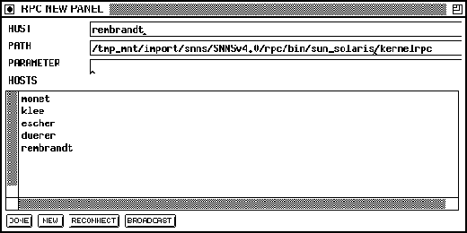

The New panel is used to start new simulator kernels on different computers. A computer host name is required in the first line (it is also possible to select one from the list by clicking on it with the left mouse button). The second line specifies the path to the desired rpc kernel. Remember to seltect an rpc kernel of the correct computer architecture, if you are working with a heterogeneous workstation cluster. Different calling parameters can be added in the third line.
The  button starts a new rpc kernel. To start the
program, xguirpc uses the `rsh'-instruction to execute a command
on a remote computer system. The newly started simulator kernel
receives the computer name, portmap number and version of the computer
on which the graphical user-interface is running. After a successful
start of the simulator kernel, the kernel registers with the graphical
user-interface. The kernel is then included in the `host-list' of the
rpc panel.
button starts a new rpc kernel. To start the
program, xguirpc uses the `rsh'-instruction to execute a command
on a remote computer system. The newly started simulator kernel
receives the computer name, portmap number and version of the computer
on which the graphical user-interface is running. After a successful
start of the simulator kernel, the kernel registers with the graphical
user-interface. The kernel is then included in the `host-list' of the
rpc panel.
If the new kernel is not listed in the `host-list' of the rpc panel within a couple of seconds, it might be due to the fact that the given path is invalid on the specified machine (e.g. wrong mount prefix). In this case try to determine the correct path and try again.
With the

and the buttons, different
already existing simulator kernels can be connected with the graphical
user-interface. The difference between those two buttons is that
selects a specific computer and
sends a signal to all computers in the LAN. It is not guaranteed that
all computers will actually receive the signal.
buttons, different
already existing simulator kernels can be connected with the graphical
user-interface. The difference between those two buttons is that
selects a specific computer and
sends a signal to all computers in the LAN. It is not guaranteed that
all computers will actually receive the signal.